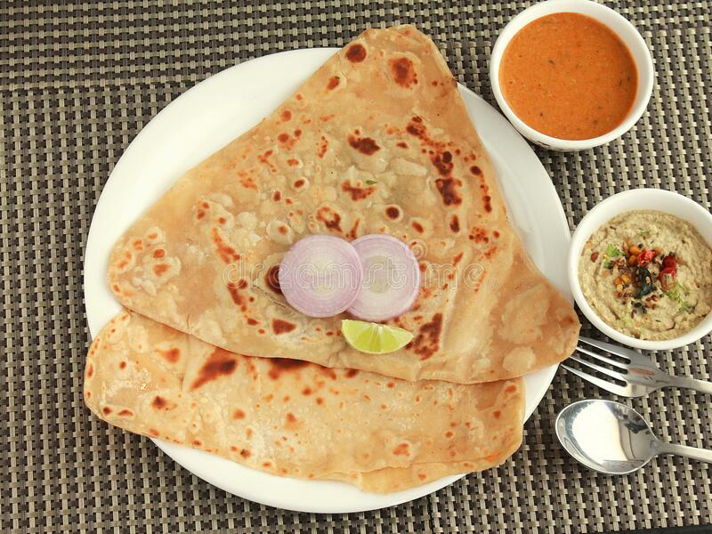

Chapathi

Description
Chapathi made with whole wheat nothing else really.
Ingredients
- Whole wheat - 2 cups
- Water - 1 cup
- Salt - as req
- Ghee - 2 tsp
Steps
- Pour the wheat flour, salt, and ghee into a bowl and mix the ingredients together.
- Add ½ a cup of water to the flour mixture and stir the mixture until it's soft and supple.
- Add the remaining water slowly, stirring until it's fully combined.
- Place the dough into an oiled bowl and cover it for 25 minutes.
- Divide the dough into 10-12 small balls, and dip them into flour.
- Roll the dough with a rolling pin until the balls resemble thin, round pancakes.
- Heat a heavy frying pan, tawa, or griddle over medium heat and cook each chapati on both sides.
- Remove the chapati from the heat, and wrap it in a towel until they are all ready to serve.